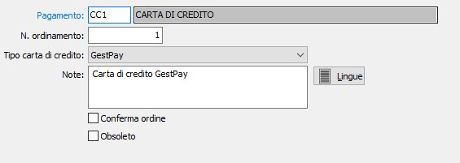

Pagamenti B2C
La tabella consente di abilitare le modalità di pagamento presenti per l'utilizzo dall'area eCommerce B2C sul web.

PAGAMENTO: codice che identifica la modalità di pagamento in esame. Sul campo sono attive le funzioni di ricerca (F9) ed accesso alla tabella (CTRL+W).
N. ORDINAMENTO: utilizzato per determinare la posizione della modalità di pagamento, quando saranno visualizzate sul web: la prima visualizzata sarà la 1, poi la 2 ecc..
TIPO CARTA DI CREDITO: definisce se il pagamento prevede l'utilizzo di una carta di credito ed il tipo utilizzato; i valori possibili sono: nessuno e GestPay.
NOTE: campo note per inserire ulteriori specifiche che saranno visualizzate alla selezione del pagamento dall'area eCommerce B2C sul web.
BOTTONE LINGUE: presente se in configurazione è abilitata la gestione lingue straniere, accede alla tabella collegata che consente di inserire la traduzione delle note della modalità di pagamento in esame nelle lingue estere gestite in modo da riportare nell'area eCommerce B2C sul web quella relativa alla lingua utilizzata.
CONFERMA ORDINE: definisce se l'ordine effettuato dall'area eCommerce B2C sul web, prima di essere importato necessita di una conferma da parte dell'utente che lo ha inserito (casella con segno di spunta); in caso contrario l'ordine sarà disponibile per l'importazione al primo riallineamento che sarà effettuato.
OBSOLETO: flag attivabile dall’utente per inibire il possibile utilizzo dell’elemento di tabella in esame nelle successive transazioni.